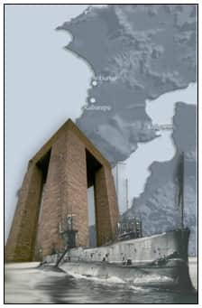
Savaş KARAKAŞ
www.savaskarakas.com
Bu makale, Deniz ve Kara savaşları olarak anlatılan Çanakkale Savaşlarının denizaltı cephesinin önemini vurgulamak, bu bölgede batmış 1 Avustralya (AE-2), 4 İngiliz (E-7, E-14, E-15, E-20) ve 3 Fransız denizaltısı (Saphir, Mariotte, Joule) olmak üzere 8 denizaltının sualtında ve/veya su üstünde olan kalıntılarıyla, savaş süresince her iki tarafa ait denizaltıların batırdığı savaş ve nakliye gemilerinin enkazlarını bulmak, incelemek ve belgelemek amacıyla hazırlanan belgeseli tanıtmayı hedefleyen bir çalışmadır.
Belgeselin İçeriği:
Müttefiklerin amacı belliydi: Çanakkale Boğazı’nı aşarak İstanbul’a ulaşmak. Böylece savaş gemileriyle 600 yıllık İmparatorluğun ve hilafetin başkentini teslim alarak “Avrupa’nın hasta adamı” Osmanlı’yı saf dışı edeceklerdi.
1915 yılında deniz harekâtı olarak başlayan Çanakkale Savaşı, 18 Mart’ta Müttefik donanmasının uğradığı bozgundan sonra 25 Nisan’da Gelibolu kıyılarına karşı yapılan çıkarma harekâtıyla amfibi harekâta dönüştü. Dokuz ay süren kanlı siper savaşları süresince Türk direnişi karşısında ilerleyemeyen İngiliz, Fransız ve ANZAC (Australian&New Zealand Army Corps.) birlikleri Çanakkale’yi tahliye ettiler. Bu kanlı trajedi, her iki taraftan toplam yarım milyon insanın zayiatına sebep oldu.
Bu şanlı Türk zaferi 90 yıldır “Çanakkale Geçilmez” olarak anlatılıyor ama aslında onlar İstanbul’a kadar geldiler!
Sessiz ve derinden...
Öncüleri de AE-2’ydi...
Rusya ile birleşip Almanya’ya karşı kısa yoldan bir zafer elde etmek isteyen İngiltere’nin sahnelediği bu kanlı trajedide Çanakkale’yi geçme rüyasını bir tek Avustralya, İngiliz ve Fransız denizatlıları gerçekleştirdi. Çanakkale Savaşı boyunca sessiz ve derinden İstanbul’a ulaşmaya çalışan bu gizli silahların faaliyetleri ve akıbetleri bugüne kadar pek az tarihçi tarafından biliniyordu ve bazılarının sualtındaki izleri ve batıkları ise tamamen sırdı. TINA (Türkiye Sualtı Arkeolojisi Vakfı) adına yürütülen sualtı araştırmasında belgesel yapımcısı Savaş Karakaş, sualtı araştırmacısı Selçuk Kolay, derin su dalgıcı Enes Edis ve Avustralyalı tarihçi Bill Sellars, Çanakkale Savaşı’ndaki İngiliz, Fransız, Avustralya ve Alman denizaltılarının rollerini belgelemek için güçlerini birleştirdiler. Sonuçta ortaya hem bu denizaltılar hem de bunların Marmara’da batırdığı Türk savaş ve nakliye gemileriyle ilgili çok önemli bulgular çıktı.
Bu savaşın az hatırlanan kısımlarından da olsa, denizaltılar Çanakkale Savaşı’nda büyük rol oynadılar. Müttefik denizaltıları en az 13 kez Çanakkale Boğazı’nı geçmeyi başardılar, hatta bazı İngiliz denizaltıları Tük gemilerine İstanbul Boğazı’nda bile sadırdılar.
Müttefik denizaltıları Marmara Denizi’ne giriş uğraşlarında doğal ve insan eliyle oluşturulmuş birçok engele, güçlü, dönen akıntılar, mayınlar ve onları yakalamak için Boğaz’da boydan boya gerilmiş kalın bir ağa karşı seyir etmek zorundaydılar. Bu engellere karşı Boğaz’ı geçiş denemelerinde, Müttefik denizaltılarından yarıdan fazlası kayıplara karıştı.
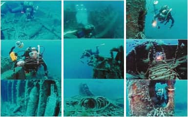
Türklerin müttefiki Almanya’nın da bu savaşta kullandığı denizaltıları vardı ve özellikle U-21, üç gün gibi bir sure içerisinde iki İngiliz savaş gemisini, Majestic ve Triumph’ı batırarak yarımadayı savunmakta olan Türklere büyük bir avantaj sağladı. Alman UB-14 Denizaltısı da Ege’de, Royal Edward ve Southland gibi Müttefiklere asker taşıyan nakliye gemilerini ve Marmara’da, E-20 Denizaltısı’nı batırarak bu savaşta Türklere hizmet etti.
Denizaltından yapılan saldırılarda her iki taraf da diğerine büyük kayıplar verdirdi. Yarımadada bulunan Osmanlı Ordusu’na malzeme taşıyan Türk nakliye gemilerinin birçoğu Marmara’da batırıldı. 25 Nisan 1915 tarihinde Çanakkale’yi ilk kez geçme başarısını gösteren Avustralya AE-2 Denizaltısı’nın açtığı yoldan Marmara’ya ulaşan İngiliz denizaltıları; 1 Türk savaş gemisi, 1 destroyer, 5 gambot, 11 nakliye, 44 buharlı ve 148 yelkenli gemi batırdılar. Hatta cepheye devam eden asker ve malzeme nakliyatını engellemek uğruna denizaltılar kara ve tren yollarına karşı sabotaj girişimlerinde bulundular.
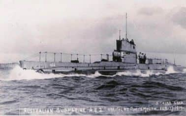
Avustralya’nın AE-2 Denizaltısı
25 Nisan 1915 tarihinde Çanakkale Boğazı’nı geçerek Marmara’ya ulaşan ilk Müttefik denizaltısı olan AE-2, 30 Nisan günü Ali Rıza Bey komutasındaki Sultanhisar torpidobotu tarafından batırılmış, Denizaltı Komutanı Yüzbaşı Dacre Stoker dahil 32 mürettebat esir alınmıştı. Peki ya Çanakkale Savaşı’nda Türk sularında kaybolan diğer 4 İngiliz ve 3 Fransız denizaltısı şimdi nerede ve ne durumda? Çanakkale’nin kayıp veya unutulmuş denizaltılarının izlerini sürmeye hazır mısınız?
Araştırmanın Adımları:
1. Adım: Eldeki tüm tarihî bilgiler, İngiliz, Fransız, Avustralya, Türk ve Alman arşivleri kullanılarak batıkların olabileceği mevkiler belirlenmiştir.
2. Adım: Markalanan alanlarda side scan (yan taramalı) ve dikey sonar, casium magnatometresi ile GPS destekli e-chart ve tarama navigasyon programı ile arama yapılmıştır.
3. Adım: Batıklar dijital kameralarla;
a) ROV (Remote Operated Vehicle)
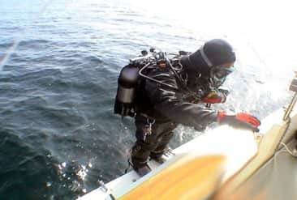
b) Derinlik ve akıntı şiddetine bağlı olarak trimix (karışım gaz) veya hava soluyan sualtı kameramanın serbest veya çan vasıtasıyla batığa inmesiyle görüntülenmiştir.
4. Adım: Sualtı ve su üstünden alınan görüntüler ve ölçümler gemi planları ve arşiv fotoğrafları ile karşılaştırılarak bulunan batıkların kimliklerinin teyidi sağlanmıştır.
5. Adım: Araştırmada elde edilen tüm bulgular, yurtiçinde ve dışında yapılan çekimlerle kurgulanarak 2006 yılında televizyon belgeseli olarak izleyicilere sunulacaktır.
Bulgular
SAPHIR
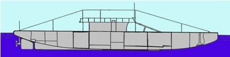
Çanakkale Boğazı’nı sualtından ilk geçme denemesi Yüzbaşı Henri Fournier komutasındaki Saphir Denizaltısı’yla yapılmıştır. 15 Ocak 1915 tarihinde pusulasındaki bir arıza sonrasında Nara’da şiddetli akıntıya kapılan denizaltı, önce 70 metre derinliğe düşmüş ardından yüzeye fırlayarak kıyı tabyalarıyla İsa Reis gambotu ve Nusrat gemisinden açılan çapraz ateşle batırılmıştır. Denizaltı mürettebatından 14 denizci ölmüş, 13 denizci sağ olarak kurtarılmıştır. Batık; Nara askeri akaryakıt iskelesine yakın bir mevkide, kıyıdan 150 metre açıkta 55 metre derinlikte kulesi ve kıç tarafı sökülmüş (1960’larda Metear tarafından) yatmaktadır. Geminin pruvası, sarnıçları boşaltmak ve makineleri çalıştırmak için kullanılan ştandraları ile mayın deflektörleri batığı tanımlamada yeterli veri sağlamıştır.
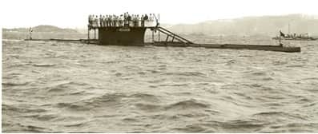
E-15
17 Nisan 1915 tarihinde güçlü akıntı sebebiyle Kepez’de karaya oturan ve Dardanos tabyasından atılan iki top mermisiyle kulesi ve akü dairesinden vurulan E-15’in enkazı 1920 yılında tamamen sökülmüş ancak araştırma sırasında 4-6 metre derinlikte gemi sökümünden kalan döküntüler bulunmuş ve filme alınmıştır. Gemi komutanı Yüzbaşı Brodie kulede vurularak ve 6 personel denizaltının içinde gazlardan boğularak ölmüş ve 1915 yılında sahile gömülmüş ise de; gemi komutanı ve iki mürettebatın mezarları Çanakkale İngiliz mezarlığında bulunmuş, sahildeki diğer mezarların izlerine rastlanmamıştır.
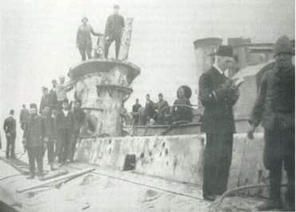
AE-2
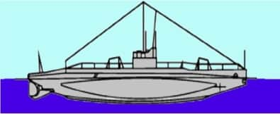
25 Nisan 1915 tarihinde Çanakkale Boğaz’ını geçerek Marmara’ya ulaşan ilk Müttefik denizaltısı olan AE-2, 30 Nisan günü Ali Rıza Bey komutasındaki Sultanhisar torpidobotu tarafından batırılmış, denizaltı komutanı Yüzbaşı Dacre Stoker dahil 32 mürettebat esir alınmıştır. 1998 yılında Selçuk Kolay tarafından yeri bulunan 72 metre derinlikteki batık, sualtı robot kamera sistemi ROV (Remote Operated Vehicle) ve Enes EDİS, Yunus PENSE, Savaş KARAKAŞ tarafından iki Trimix (karışım gaz) dalışı ile görüntülenmiştir.
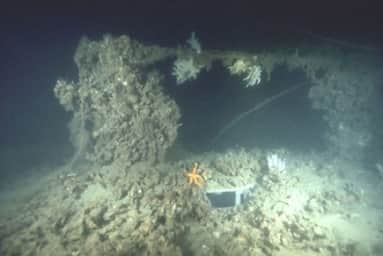
JOULE
1 Mayıs 1915 tarihinde, Yüzbaşı Dupetit Thouars komutasında Kepez-Havuzlar arasındaki IIA mayın hattında mayına çarparak batan Fransız Joule Denizaltısı’nın mevkii sonar araştırmasında bulunmuş ve 44 metrede yatan denizaltı enkazının yan taramalı sonar ile yüksek çözünürlükte çekimi yapılmıştır. Batığın gemi yolu üzerinde olması ve güçlü akıntılar sebebiyle 29 mürettebatıyla derinlerde yatan Joule’a ilk dalış gemi trafiğinin yönlendirilmesinin ardından Detek Salvor gemisindeki çan vasıtası ile yapılabilmiştir. Dora II dalgıç çanı içerisinde Enes Edis batığa indirilmiş ve plaket bırakmıştır. Bu tek dalışta sualtı film çekimi yapılmıştır. Batığın üzerinde tek torpidosu olduğu gözlenmiştir, diğeri 1915 yılında Agamemnon gemisi tarafından akıntıyla yüzeyde bulunmuştur.
MARIOTTE
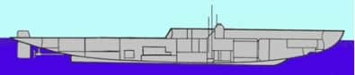
26 Temmuz 1915’te Çimenlik Kalesi’nden açılan ateş ile vurulan ve Mesudiye’den kurtarılan denizci askerler tarafından mürettebatı esir alınan Fransız Mariotte Denizaltısı uzun yıllar Çimenlik Kalesi’nin yakınında karada kalmış daha sonra sökülmüş ve bir kısmı da Nara’da askeri bölge içerisinde bir iskelenin altına temel olmuştur. İskelenin altındaki enkazın incelenebilmesi için üzerindeki betonun kaldırılmasıyla yakın zamanda ortaya çıkan Mariotte enkazında askeriye tarafından kapsamlı bir temizlik ve kurtarma çalışması yapıldığı görülmüş, TINA olarak; Çanakkale Boğaz Komutanlığı tarafından başlatılan bu önemli çalışmaya destek olmak istediğimiz belirtilmiştir.
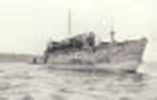
Moriotte 1915
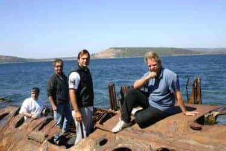
Moriotte 2005
E-7
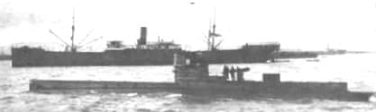
4 Eylül 1915 tarihinde Marmara’ya ikinci seferini yapmakta olan Yüzbaşı Cochrane komutasındaki İngiliz E-7 Denizaltısı, Nara’da 30-35 metre derinlikte denizaltı mania hatlarımıza takılmış ve Alman UB-14 Denizaltısı Komutanı Heimburg ve aşçısı tarafından yüzeyden atılan sualtı bombalarıyla yüzeye çıkmaya zorlanmıştır. Tüm mürettebatı esir alınan denizaltı, kendi komutanı tarafından batırılmıştır. E-7; sonar araştırmasında 96 metre derinlikte, 4 Nisan 1953 tarihinde batan Dumlupınar denizaltımıza 100-125 metre mesafede bulunmuştur. Her iki batığın da yan taramalı sonar ile yüksek çözünürlükte çekimleri yapılmış ancak Boğaz’daki yoğun gemi trafiği için kritik bir nokta olması sebebiyle ve şiddetli akıntı sebebiyle bu batığa dalış imkânı bulunamamıştır.
E-20
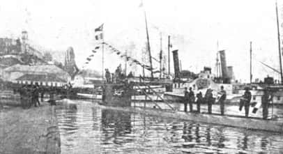
Ele, Müstecip Onbaşı ismi verilen Fransız Turquoise Denizatlısı